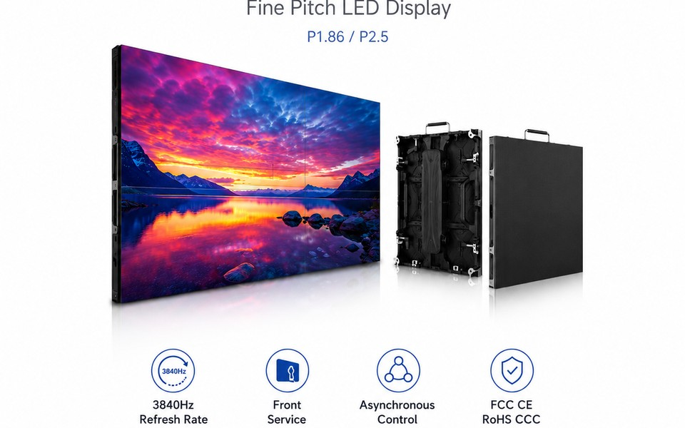

Shopping malls and retail buildings use LED displays to deliver promotions, brand campaigns, event information and wayfinding content on a large visual surface. An indoor fixed LED display in the Philippines must provide clear images, stable long-term operation and practical maintenance access.
Choose Pixel Pitch by Viewing Distance
Pixel pitch is the distance between neighboring LED pixels. Smaller pitches create higher pixel density and are better for close viewing. P1.86 or P2.5 is often suitable for entrances, premium retail zones and atriums where customers stand close to the screen. P3 or P4 can be more cost-effective for larger screens viewed from farther away.
Brightness and Image Quality
Indoor brightness should be strong enough to compete with store lighting without making the screen uncomfortable to view. Consistent color, good grayscale performance and a high refresh rate improve advertising playback and camera performance. Content resolution should also match the final screen dimensions.
Plan Installation and Maintenance Early
The supporting steel structure, ventilation, power distribution and cable routing should be confirmed before production. Front-service cabinets are useful when there is no maintenance corridor behind the display. Magnetic modules allow technicians to access modules, power supplies and receiving cards from the front.
Support for Philippine Projects
LumProTech provides factory-direct product configuration and Philippines warehouse support in Manila, Cebu and Davao. Send the screen width and height, installation photos, viewing distance and delivery schedule for a suitable recommendation.